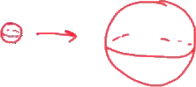
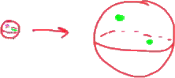
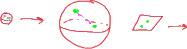
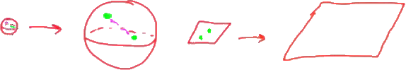

So when we start talking about universe expanding and contracting what we're talking about is I have this so homogeneous I'm isotropic geometry and maybe that geometry start small.
And then that geometry expands into some into some what we would call larger geometry.

There's more surface area here than there is here.
But what people often want to say is that there is some higher dimensional space that this object that this surface is expanding into.
But I can describe a love the geometry completely staying on this surface without ever leaving the serface.
A higher dimension does not have to exist in order for this to be a consistent theory.
And when we talk more about the expansion of the universe this is the kind of expansion were talking about this geometry space itself changing and if I have say two points on the surface then shipping brighter color then if I am cue points on this surface then as this space expands.

Then these two points will appear to be further apart it'll take longer for like to bounce back and forth.
And this doesn't just happen for curved geometry.
So I can have this plan geometry starting in a a somewhat kinda compressed state you can say so so these two points are close together in takes like certain amount of time to bounce between knows.

But that geometry through general to be because we said that in according to general to be space-time can actually evolving changing based on the matter and energy that's in it.

So this piece can actually expand and these two points will be further will be moved farther away from each other it'll take away a longer amount of time to travel between those two points.
But one of the important things to know when we're considering these expending geometry is is that we do not need to have some higher dimension that this thing is expanding into.
We don't have compressed matter and empty space outside this is expanding into.
We can completely describe this simply as the geometry this space is changing.
Only talking about only using on these better on that geometry not anywhere anywhere else here.
So when people sometimes say that the universe is expanding into something that's like saying I have bar that has a certain amount of temperature and that temperature is is increasing and what is that temperature increasing into when we talk about it that way this question what is the universe is expanding into just doesn't make sense anymore.
So so that's very important point that I really want to emphasize their does not have to be some higher dimensional space at this is expanding into.